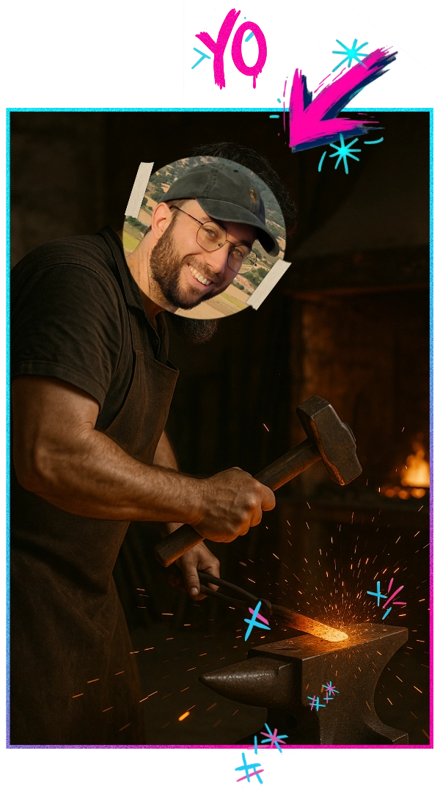
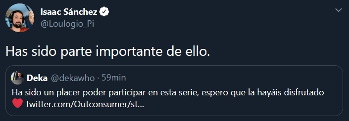
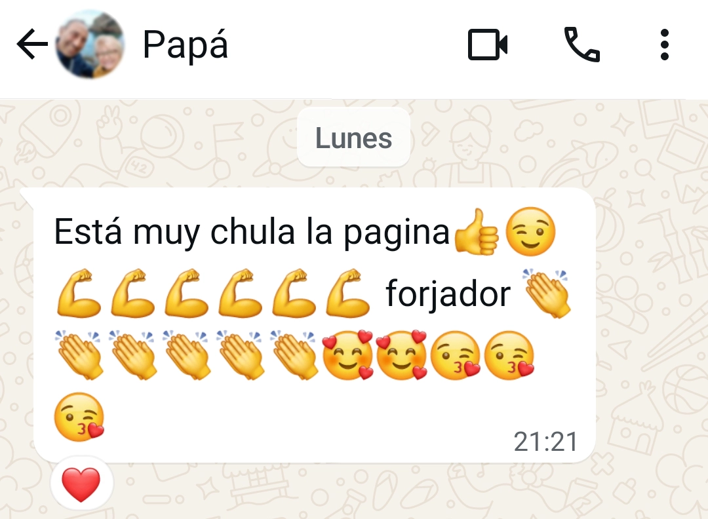

Trabajo con negocios que quieren crear clientes "adictos" a comprar (felizmente) una y otra vez
Soy especialista en marketing directo y ventas cruzadas. ¿Copywriter? Sí aunque prefiero el término wordsmith➜ Forjador de palabras
David Varea
Trabajo con negocios que quieren crear clientes "adictos" a comprar (felizmente) una y otra vez
Soy especialista en marketing directo y ventas cruzadas. ¿Copywriter? Sí aunque prefiero el término wordsmith➜ Forjador de palabras

Desde 2019 he trabajado junto a grandes influencers. En ese sector aprendí mucho sobre cómo mantener la atención de una visita porque el primer paso para vender es que te presten atención.
Esto opinan de mi trabajo
Has escuchado a Rioboo. Es creador de contenido y cofundador de CORI (e-commerce de café) Aunque no sigas el mundo influencers igual te suena por haberlo visto con Ibai.
Antes de seguir mostrándote la infinidad de opiniones sobre mí ➜ Me llamo David pero en internet me conocen como Deka (soy dekawho en redes) Seguimos:
Este es Chuso Montero. Abrimos su canal desde 0 y lo llevamos hasta 109.500 seguidores potenciando su personalidad. Aquí tienes la buena percepción que tiene su audiencia de nosotros:
Este último es Carlos Lana. Uno de los editores de Magnates Media (un canal en inglés con 185 millones de reproducciones en vídeos largos) Después de ver una de las piezas en las que yo había trabajado me escribió para felicitarme.

Es Loulogio. Igual te suena su nombre. Fue uno de los primeros españoles en viralizarse con el nacimiento de youtube. Millones de visitas cuando tener solo mil ya era un logro. Hizo vídeos míticos como «La Batamanta». En esa época no trabajábamos juntos pero años después sí lo hicimos.

Esta es la review más importante, la de mis padres.
Outconsumer: otro de los padres de Youtube en español. Es alguien muy respetado por la comunidad gamer y por otros creadores de renombre.